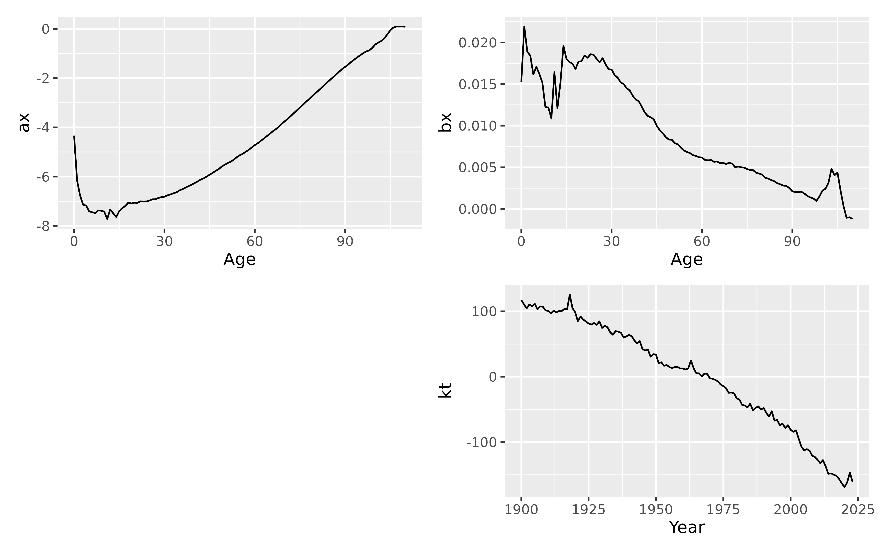

Lee-Carter model of mortality or fertility rates.
LC() returns a Lee-Carter model applied to the formula's response
variable as a function of age. This produces a standard Lee-Carter model by
default, although many other options are available. Missing rates are set to
the geometric mean rate for the relevant age.
Arguments
- formula
Model specification.
- adjust
method to use for adjustment of coefficients \(k_t kt\). Possibilities are “dt” (Lee-Carter method, the default), “dxt” (BMS method), “e0” (Lee-Miller method based on life expectancy) and “none”. y).
- jump_choice
Method used for computation of jump-off point for forecasts. Possibilities: “actual” (use actual rates from final year) and “fit” (use fitted rates). The original Lee-Carter method used 'fit' (the default), but Lee and Miller (2001) and most other authors prefer 'actual'.
- scale
If TRUE, bx and kt are rescaled so that kt has drift parameter = 1.
- ...
Not used.
References
Basellini, U, Camarda, C G, and Booth, H (2022) Thirty years on: A review of the Lee-Carter method for forecasting mortality. International Journal of Forecasting, 39(3), 1033-1049. https://doi.org/10.1016/j.ijforecast.2022.11.002
Booth, H., Maindonald, J., and Smith, L. (2002) Applying Lee-Carter under conditions of variable mortality decline. Population Studies, 56, 325-336. https://doi.org/10.1080/00324720215935
Lee, R D, and Carter, L R (1992) Modeling and forecasting US mortality. Journal of the American Statistical Association, 87, 659-671. https://doi.org/10.1080/01621459.1992.10475265
Lee R D, and Miller T (2001). Evaluating the performance of the Lee-Carter method for forecasting mortality. Demography, 38(4), 537–549. https://doi.org/10.1353/dem.2001.0036
Examples
lc <- aus_mortality |>
dplyr::filter(State == "Victoria", Sex == "female") |>
model(lee_carter = LC(log(Mortality)))
report(lc)
#> Series: Mortality
#> Model: LC
#> Transformation: log(Mortality)
#>
#> Options:
#> Adjust method: dt
#> Jump choice: fit
#>
#> Age functions
#> # A tibble: 101 × 3
#> Age ax bx
#> <int> <dbl> <dbl>
#> 1 0 -3.87 0.0155
#> 2 1 -6.04 0.0222
#> 3 2 -6.67 0.0190
#> 4 3 -7.07 0.0191
#> 5 4 -7.06 0.0153
#> # ℹ 96 more rows
#>
#> Time coefficients
#> # A tsibble: 103 x 2 [1Y]
#> Year kt
#> <int> <dbl>
#> 1 1901 94.9
#> 2 1902 95.4
#> 3 1903 93.4
#> 4 1904 84.5
#> 5 1905 82.9
#> # ℹ 98 more rows
#>
#> Time series model: RW w/ drift
#>
#> Variance explained: 78.58%
autoplot(lc)
